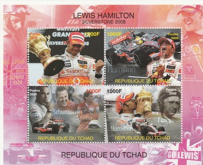
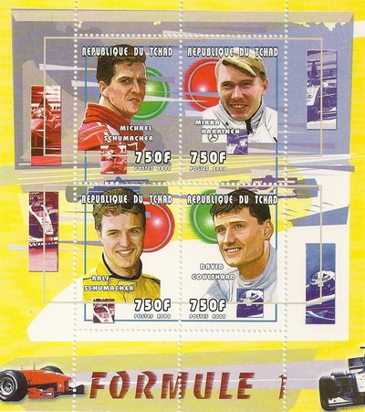
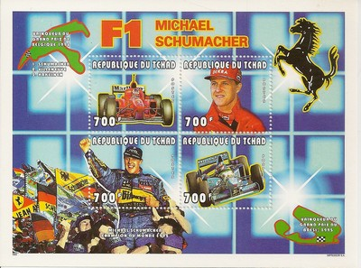
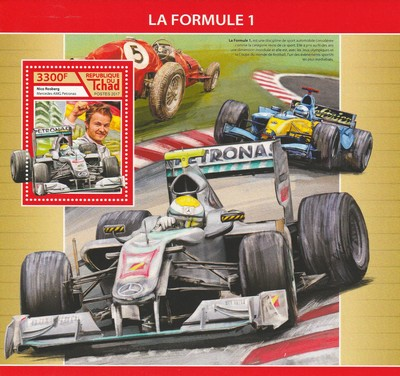

Chad
 |
 Issue date: 2008 A 4 stamp sheet celebrating Lewis Hamilton's victory at the British Grand Prix in 2008, driving the McLaren MP4-23. Despite an error in qualifying that saw him start fourth on the grid, Hamilton went on to win the British Grand Prix in difficult, wet conditions. His performance was stated as being one of his best drives to date. Hamilton himself said in the post race press conference that it was his most difficult and most meaningful win. Hamilton then went on to win his first driver's title in this year.  Issue date: 2000 A mini sheet of values featuring: Michael Schumacher - Ferrari - win of the drivers' title in 2000 Mika Hakkinen - McLaren - runner up to the drivers' title in 2000 Ralf Schumacher - Williams - fifth place in the drivers' title in 2000 David Coulthard - McLaren - third place in the drivers' title in 2000  Issue date: 1996 A mini sheet featuring Michael Schumacher. Schumacher won the drivers' title a total of seven times with both Benetton and Ferrari.  Issue date: 2002 A mini sheet of values featuring the folloiwng F1 drivers: - Takuma Sato - 2002 to 2008, Jordan, BAR and Super Aguri - Michael Schumacher - 1991 to 2006, 2010 to 2012, Jordan, Benetton, Ferrari and Mercedes - Juan Pablo Montoya - 2001 to 2006, Williams and McLaren - Jenson Button - 2000 to 2012, Williams, Benetton, BAR, Honda, Brawn GP and McLaren - David Coulthard - 1994 to 2008, Williams, McLaren and Red Bull Racing - Eddie Irvine - 1993 to 2002, Jordan, Ferrari and Jaguar Racing - Allan McNish - 2002, 2003, Toyota and Renault - Jacques Villeneuve - 1996 to 2006, Willians, BAR, Renault and Sauber - Ralf Schumacher - 1997 to 2007, Jordan, Williams and Toyota  Issue date: 10th July 2017 A mini sheet of four values featuring: - Sebastian Vettel - Lewis Hamilton - Jenson Button - Fernando Alonso  Issue date: 10th July 2017 A mini sheet featuring Nico Rosberg. Rosberg competed in F1 from 2006 to 2016; he drove for Williams for the first four years o his career and then moved to Mercedes to partner Michael Schumacher at the team formed by the purchase by Mercedes of champions Brawn GP to create an all German team. In 2013 Lewis Hamilton joined Mercedes and an intense and volatile rivalry followed for the next four seasons. Rosberg eventually became World Champion in 2016; he then announced his retirement at the prize giving ceremony in Vienna. He was the first reigning champion to do so since Alain Prost in 1993; he is also one of two sons of former champions to win the title (Damon Hill being the other). |